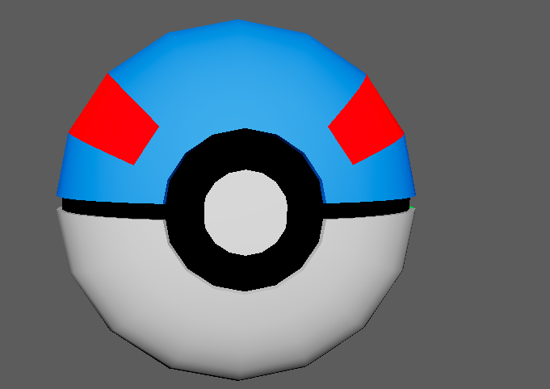
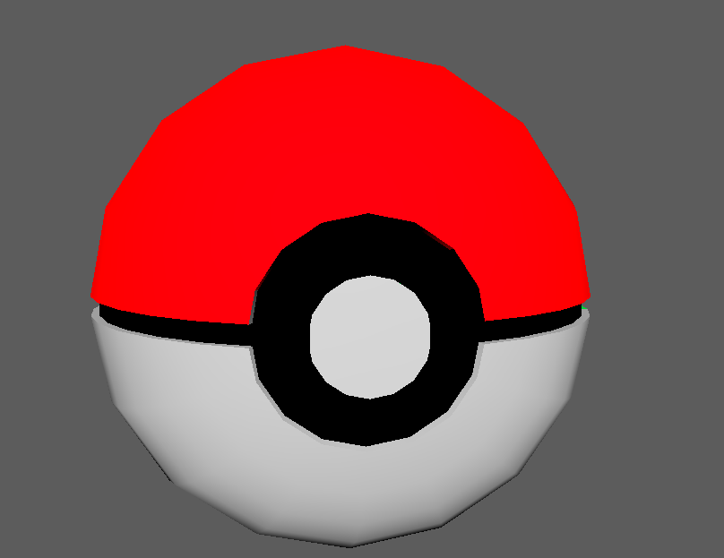
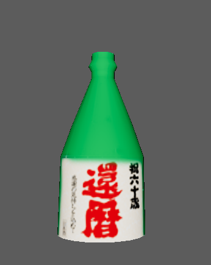
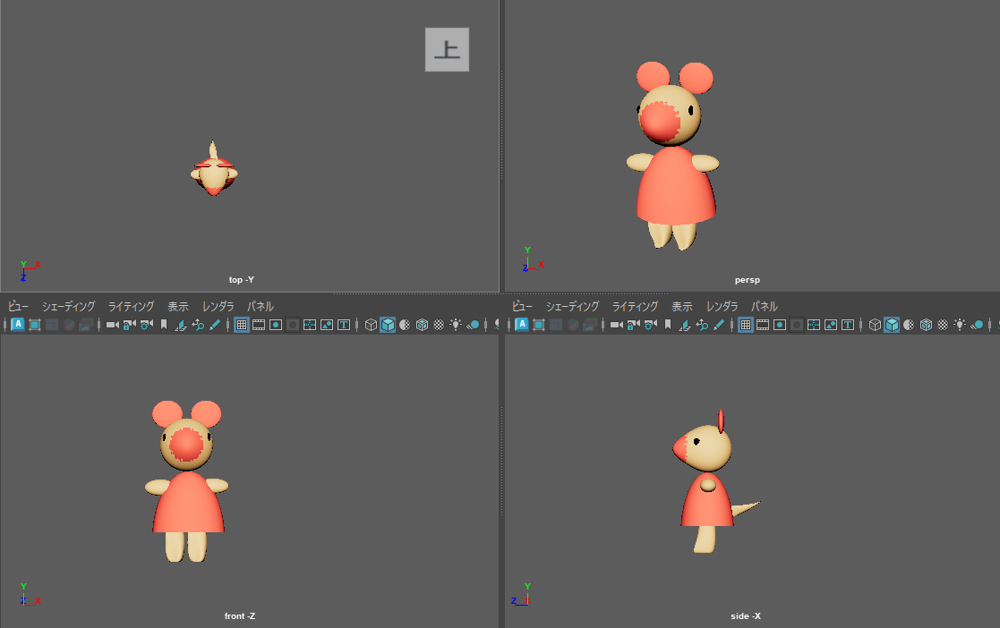
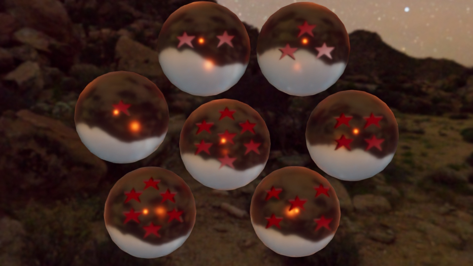
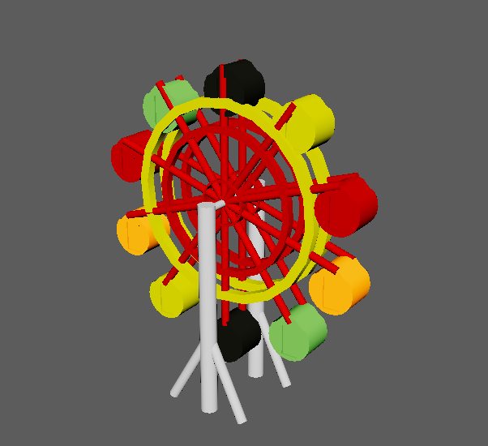
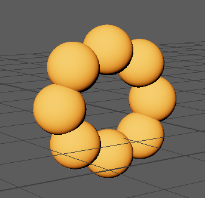
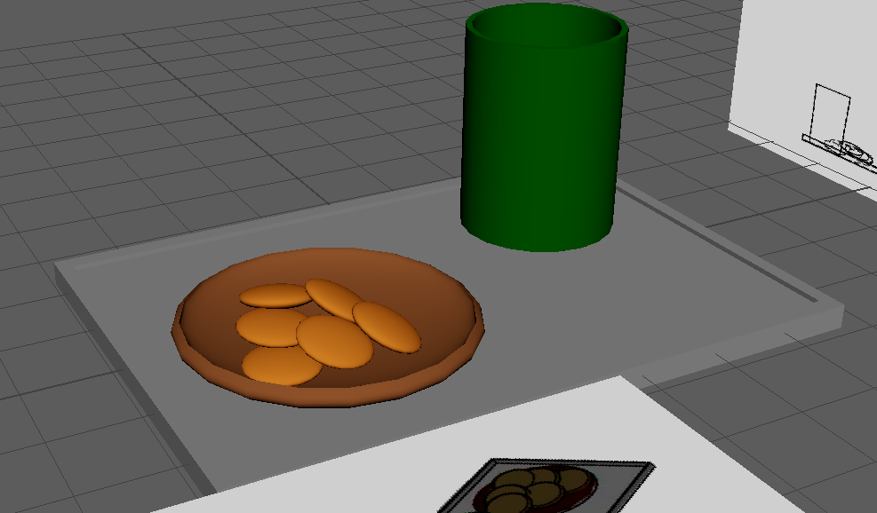
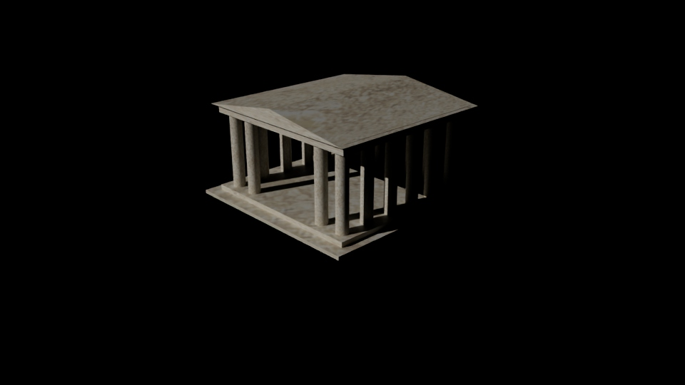
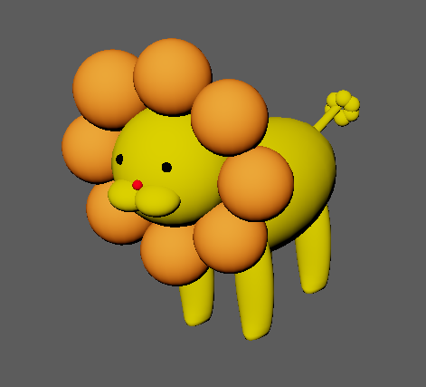

site
好きなもの紹介
くいしんぼ如月はとてもおいしいお弁当屋さんです。
くいしんぼ如月
好きな音楽グループ
SOUL'd OUT
授業で学んだことを少し紹介します。
Bootstrap5
ボタン
グリッドシステム
レスポンシブなグリッドシステム
タイポグラフィ
画像
テーブル
図表
アラート
バッジ
プログレスバー
カード
カード2
ナビゲーション
パンくずリスト
ページネーション
カラム課題
カード課題
3Dキャラクターデザイン(Maya)










JavaScript学習記録
JavaScript学習記録1
JavaScript学習記録2
JavaScript学習記録3
JavaScript学習記録4
JavaScript学習記録5
JavaScript学習記録6
JavaScript学習記録7
WordPressでパン屋サイトの作成をしました。
パン屋サイト
一年生の時はVisual Studioでゲーム制作をしました。
二年生からはC#やPHPも学んでいます。